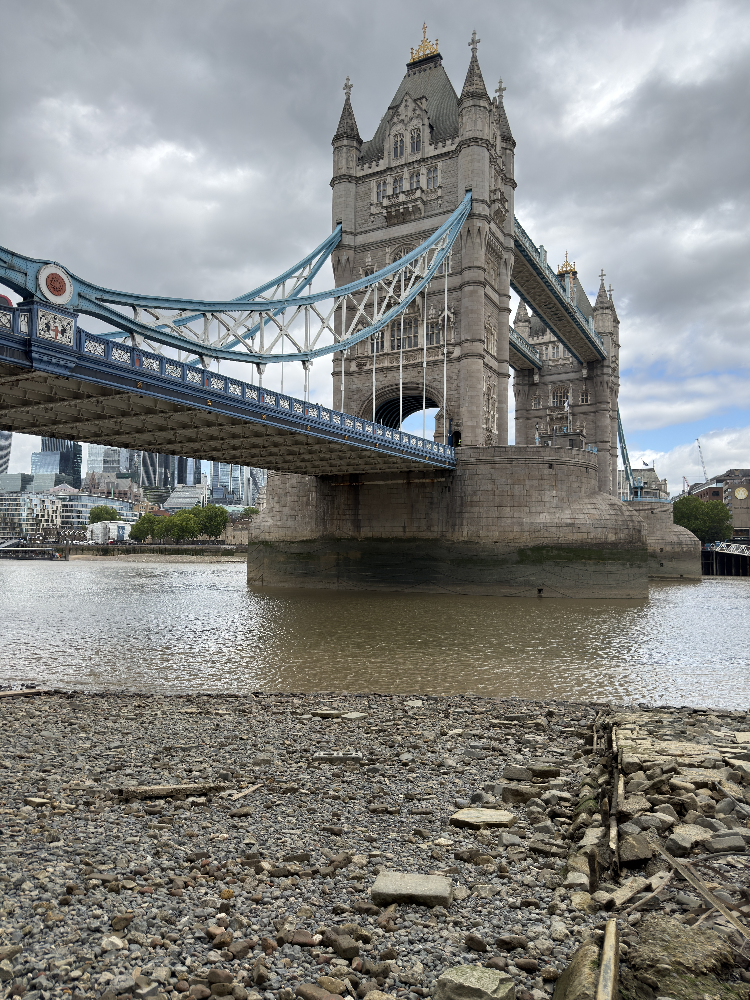
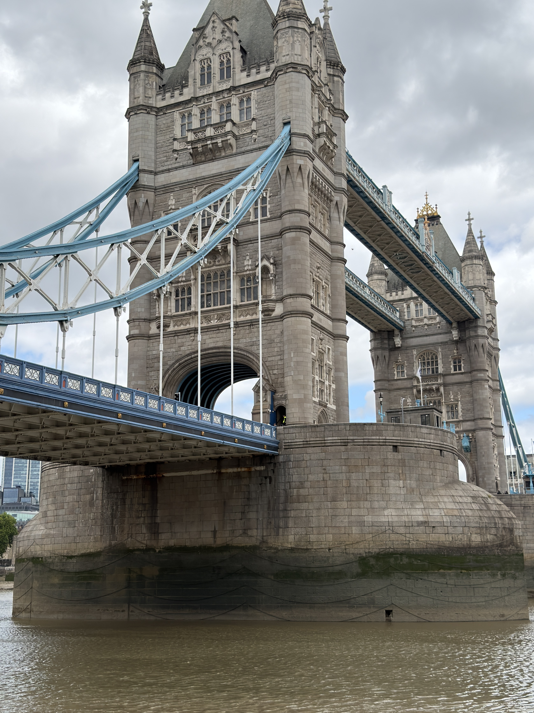

Perspective 01
A different perspective changes what we see.
Perspective 02
The same bridge can look different from another angle.
Perspective 03
Looking up reveals details we might normally miss.
DES 157A / EVERY PICTURE
Exploring London through different viewpoints.
Every place can look different depending on where you stand. Through three photographs of Tower Bridge, I wanted to explore how changing our perspective can transform the way we experience the same location.



01 / 03
02 / 03
03 / 03
A different perspective changes what we see.
The same bridge can look different from another angle.
Looking up reveals details we might normally miss.